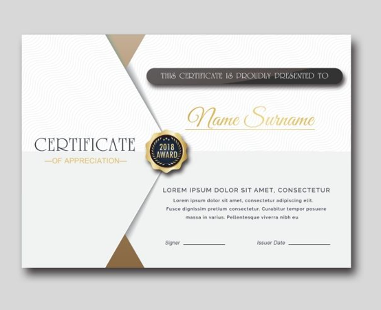

CERTIFICATION
- The Act of certifying or stage of being certified
- Important for personal development and add credibility to your expertise
- Some position require certificates,but they are not required from all positions to have a job
- Any certification can help you achieve an advantage when employers take a look at your resume

BACK